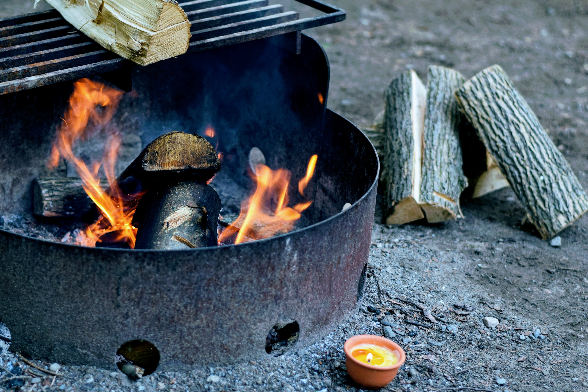

Connect With Nature
Day-to-day life is usually a blur of passing lights, blaring sounds, and people's voices. Connecting with nature helps you find peace in your busy life while making the world a better place.
Let nature in by opening your windows,blinds,curtains,and even doors allows sunlight and natural air to flow through your home, giving it a more relaxing and natural atmosphere. Spend some time each day outside observing what's happening around you. You'll begin to notice things about your environment that you've never seen before, and increase your awareness of your surroundings.
Go for a walk, It doesn't matter if you walk in the local park or around the neighborhood, getting outside exposure and exercising are good for your health and strengthen your connection with nature. Fresh air and sun exposure are just a couple of examples of how walking each day can improve your connection to nature and your overall health.
Go Camping,A camping trip with buddies or family is a great way to bond not only with each other but also with nature. Escape from everyday life and find yourself with the trees, stars, and campfire stories.
Outdoor Activities,Back in my day (which wasn't that long ago), playing outside wasn't really optional, but in this technological age it's surprisingly necessary to mention that we should go outside sometimes. I love wasting away my hours watching internet videos as much as the next relatively young person, but getting out of the house keeps us connected to the world that we all share and to each other, and is more likely to keep us young than any number of perfect selfies.

Pros & Cons Of Camping
ProsCons
You can spend your time in nature Often low comfort levelCamping gives you the opportunity to unplug from your daily life It may be crowded at your campground
Help reduce your stress Camping may be problematic on rainy days
Completely different lifestyle compared to your home Shared showers can be gross
Might be the cheapest forms of travel Quite limited vision at nighttime
You can improve your fitness level Excessive waste production